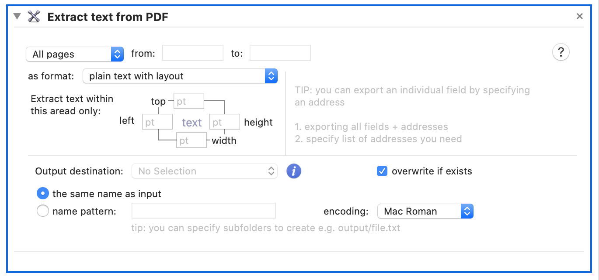
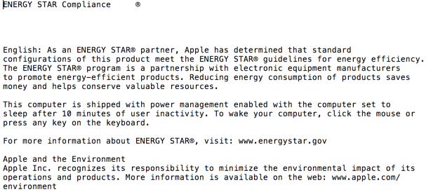
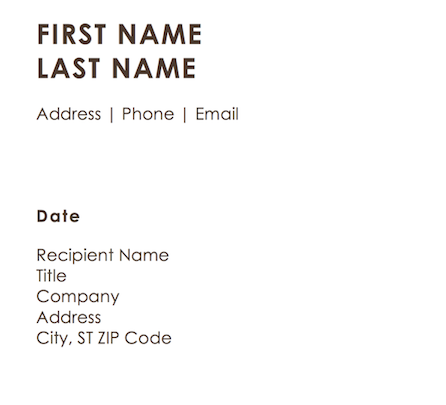
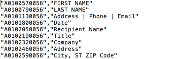
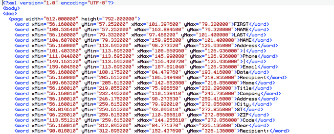

There are three ways how you can extract text from PDF.
- plain text with layout
- text fields
- raw text records as XML

Plain text with layout
Turn PDF into a text file. This method is most appropriate for documents that contain text paragraphs like books or articles. The layout will be preservers as closely as possible.
PDF document

extracted text

Extract text fields
This method is useful for extracting information from PDFs with a structure, such as forms or records.
PDF document

extracted text fields
The result is CSV file which you can process later. First column contains field ‘address’, this address can be used for merging or extracting records, where as the second value is the text value.

text as XML record
This is the most ‘technical’ approach. It will extract all words as XML record containing X,Y position plus width and height of each word (or text fragment) on a page. This differs from the previous extraction method in that the extractor will not attempt to join words together. The raw XML output may only be useful in case you’d like to process it using your own matching algorithm.
